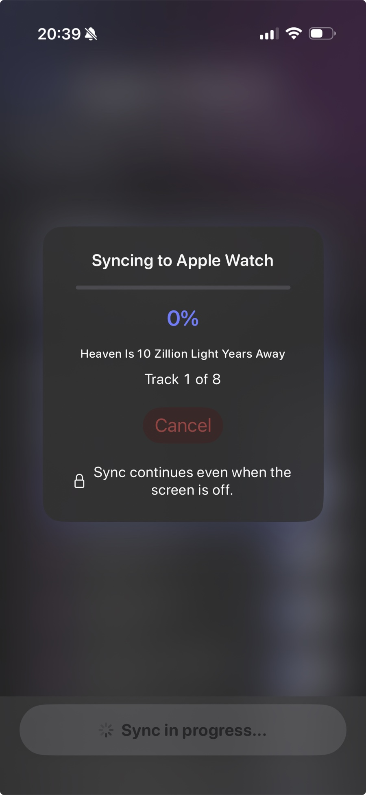

Deep dive
Sync,
then run
untethered.
Run2Beat syncs BPM lists and standard playlists from your iPhone to your paired Apple Watch so you can leave the phone at home and run with just AirPods. This page is the long version of what that sync does, how the transfer protocol works, and how to make it fast and reliable.
The model: iPhone configures, Watch plays
The iPhone is Run2Beat’s configuration and processing hub: it stores your library, computes BPM, measures loudness, builds BPM lists and pre-renders any tempo-shifted variants. The Apple Watch is a playback runtime — it stores the synced files and plays them back, nothing more.
Everything you see on the Watch is the result of an explicit sync from the iPhone’s Sync screen. There is no hidden background sync.
Manual and visible
You start sync yourself from the iPhone’s Sync screen, where the app shows connectivity readiness and exactly what’s new, updated or deleted before you commit. While the sync runs, a live overlay shows progress; the Watch screen shows nothing during the transfer — that’s normal.

Both apps need to be open and active at the moment you start. After that, both screens can be off — the transfer keeps running over Bluetooth. There is one caveat for very long first-time syncs on older watches, covered in Long first-time syncs on older watches below.
What gets transferred
For every track in a BPM list or standard playlist Run2Beat sends:
- The audio file, always transcoded to HE-AAC for compactness on the watch. If the track is already HE-AAC in your Library it stays at that efficient profile (64 kbps); if it’s still MP3, AAC or WAV on the phone, the watch copy is encoded a step higher (80 kbps) so you keep more of the original quality.
- Title, artist and artwork embedded in the file’s metadata as a fall-back so the playlist is reconstructable even if the structured payload arrives late.
- BPM and loudness data (LUFS, true peak) so the Watch player applies the same gain math as the iPhone — the same track sounds equally loud on both devices.
- For BPM lists: pre-rendered tempo variants. The iPhone applies the recipe’s rate change with pitch preservation (Apple’s spectral time-pitch algorithm) in a single-pass encode, so the Watch never has to do that work itself.
- The play order and list metadata (including mosaic thumbnails when present).
Equalizer presets and transition settings (crossfade / gapless / beat matching) travel via the WatchConnectivity shared-settings channel alongside the list payload. On the Watch you pick an EQ preset directly from the Home view without your phone.
Delta sync and signatures
The iPhone keeps deterministic signatures of every list that has successfully landed on the Watch — recipe signatures from the explicit track selection, playlist signatures from ordered track IDs, durations and name. Pending changes are computed by comparing current app state to those stored signatures:
- New — selected on the phone, not yet verified on the watch.
- Updated — membership, order or name changed since the last successful sync.
- Deleted — removed from the phone selection; the watch gets an explicit remove.
Unchanged lists are skipped. Only new or changed audio files are queued on the file-transfer channel. Re-open the Sync screen with nothing changed and the next sync takes the fast path: the watch’s installed snapshot already matches the expected IDs, track counts and on-disk file counts, so the orchestrator skips the transfer machinery and returns immediately.
An edited list that is still installed on the watch never takes that fast path. The snapshot only reports per-list counts, not the exact track-ID set, so a content-change guard forces a full re-transfer and reconciliation whenever a list is marked updated — otherwise a rename or membership edit could silently never leave the phone.
Transport: three WatchConnectivity channels
Sync rides Apple’s WatchConnectivity framework. Three channels do different jobs:
- File transfer — one outbound transfer per audio asset. Queued by the OS; survives sleep on both devices.
- Shared settings / application context — structured metadata (recipes, playlists, assignments, variants, shared settings). Persistent; delivered when the watch wakes if the app was suspended.
- Foreground message — fast path for the same critical payloads and for the watch’s ACK snapshot. Requires both sides to be reachable; fails silently when the watch screen is off.
Critical payloads always go over the dual channel (message + application context) so sleep cannot strand a delivery. Files and context are sleep-resilient; the fast ACK path is not — which is why the iPhone waits up to about 120 seconds for the watch to confirm what actually landed.
Convergence: a list is synced only when it is verified
After every file is queued, the orchestrator enters a per-list convergence loop. For each list it polls the watch’s installed snapshot and requires all three:
- the list ID is present on the watch,
- the watch’s track count matches the iPhone’s expected count,
- the watch’s verified track count (audio files physically present in the app’s Music folder) also matches.
Only lists that clear all three checks are marked verified and get their signatures persisted. Lists still missing at the timeout are handled per list, not for the whole sync: the watch receives an explicit remove so orphan metadata and half-written files do not linger, and the iPhone clears that list’s signature so the next sync retries it from scratch. You never keep a list that looks playable on the Watch but is missing some of its files.
If the watch stayed unreachable for the entire convergence window, the orchestrator has no evidence the list broke. Those unconfirmed lists are left untouched — still playable in their prior state on the wrist, still pending on the phone until a reachable sync finishes the change. That is what keeps renaming an already-installed list safe over a flaky Bluetooth link.
Keeping the Watch awake during transfer
When the watch screen turns off, watchOS may suspend the app. File and context delivery still work (the OS queues them), but ACK timing becomes unpredictable and the foreground message channel stops working. Run2Beat starts an extended runtime session on the watch as soon as sync begins so the process stays alive with the display off, callbacks fire promptly, and the fast ACK path can succeed when reachability returns.
That session can only be started while the watch app is in the foreground — which is why both apps must be active when you tap Start. An early sync-start signal (transaction ID only, no track payload) is pushed from the phone before the first file transfer so the session takes hold while the wrist is still awake. Once running, you can lower your wrist and lock the phone.
The session is not unlimited. watchOS ends it after a platform-defined window (on the order of several minutes). Everyday syncs finish well inside that budget; see Long first-time syncs for the edge case.
Speed and time expectations
Files travel over Bluetooth. A normal-length playlist routinely takes several minutes the first time. Subsequent syncs are much faster because only what is new or changed is transferred; lists already verified on the Watch are skipped.
Practical tips:
- Keep iPhone and Watch close together. Bluetooth degrades quickly with distance and obstacles.
- Open both apps to start. After that they can both sleep.
- iPhone keeps syncing in the background. Lock the screen or switch apps — the transfer continues. The overlay updates when you return to Run2Beat.
- Plan ahead for first-time syncs of large lists. Sending new tracks always takes time; syncing tonight for tomorrow morning’s run goes a long way.
Long first-time syncs on older watches
The extended-runtime window is an Apple platform limit, not a Run2Beat setting. For everyday syncs it is far more time than the transfer needs. It can matter for a big first-time sync of many tracks and lists that runs longer than a single window — more often on older hardware (Apple Watch Series 6 and earlier), over weak Bluetooth, or when the watch is warm and throttling.
The symptom is unmistakable and harmless: with the watch screen off the transfer appears to pause, and the iPhone overlay stops advancing. It does not fail and nothing is corrupted — the watch simply cannot reopen a background window on its own while the screen is off.
To finish a long sync:
- Glance at the watch or raise your wrist every few minutes. Each time the app becomes active it opens a fresh window and the transfer resumes from where it stopped.
- Or keep the watch screen on while the big first sync runs — for example on the charger.
- Split a huge first sync into smaller rounds if you prefer: sync a couple of lists, let them finish, then sync the rest.
- Remember it is a one-time cost. Later syncs only move what changed and complete in seconds.
Cancel any time, resume later
The overlay’s Cancel control aborts immediately: outstanding WatchConnectivity file transfers are cancelled, polling loops exit within a few hundred milliseconds, and transient progress state is cleared. The next sync resets every overlay flag, runs a pre-sync orphan cleanup for anything half-written on the watch, and picks up lists whose signatures were never written — they show as still pending on the Sync screen.
Clear Apple Watch Data
The Sync screen can wipe the watch installation clean. That cancels any in-flight sync, waits for an explicit ACK from the watch, drains leftover file transfers from the session queue, and clears the iPhone’s mirror of what was installed (signatures, snapshots, the watch-sync export cache and pre-rendered variants). Preferences such as EQ presets and transition settings are kept. The next sync then behaves like a genuine first-time transfer — without clearing the phone-side mirror, skip logic would assume the watch still held every file and leave you with metadata pointing at audio that never arrives.
Standalone playback on the Watch
Once a list is synced, the Watch can play it without the phone. Pair AirPods directly to the Watch, open Run2Beat on the wrist, pick a BPM list or playlist and press play.
The Watch player honours the same volume normalisation, the same EQ preset and the same crossfade behaviour as the iPhone — audio decisions travel as synced files and metadata, so the sound matches whichever device you listen from.
If something doesn’t arrive
The Sync screen surfaces an item-level pending list and explicit error messages. Common situations:
- “Watch not reachable”. The Watch app isn’t open or the devices are out of Bluetooth range. Open Run2Beat on the Watch once; sync then starts normally.
- A list is never half-synced. Interrupted transfers are verified per list; incomplete lists are removed from the Watch and queued fresh on the next sync.
- “On Watch” badge. After a successful sync each list shows a green “On Watch” indicator confirming both metadata and every audio file are present. An edited list shows that changes will sync instead, until the next successful run.
Storage on the Watch
Audio files land in the Watch’s app sandbox as HE-AAC. A typical 4-minute song is roughly 2 MB at 64 kbps when the Library copy was already HE-AAC, or a little larger at 80 kbps when Run2Beat encodes from a higher-quality original on the phone — still about half the size of a comparable MP3 or AAC-LC file. Cache names include the bitrate tier, so a policy or source-type change invalidates stale exports on the next sync instead of reusing the wrong encode.
Privacy reminder
Audio files are transferred directly from your iPhone to your paired Apple Watch using Apple’s WatchConnectivity framework. No data passes through Run2Beat’s servers because Run2Beat doesn’t run any.
→ Back to the overview